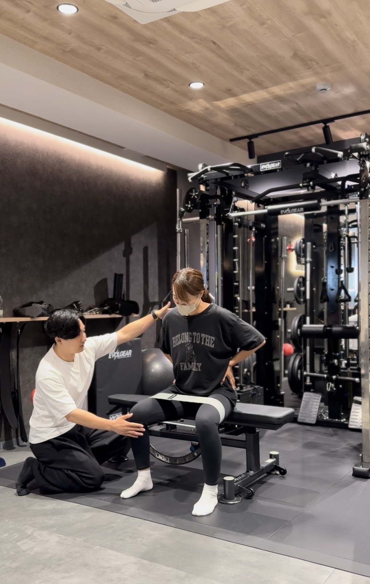
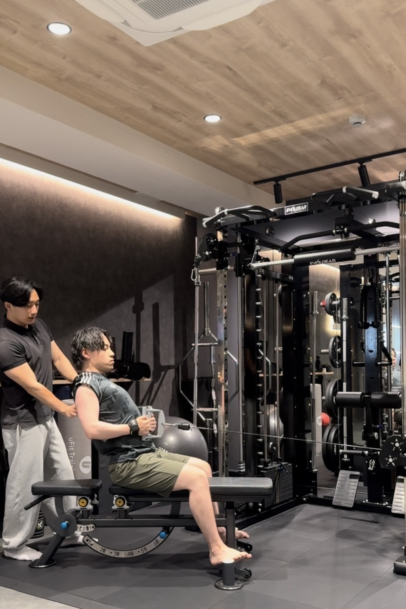
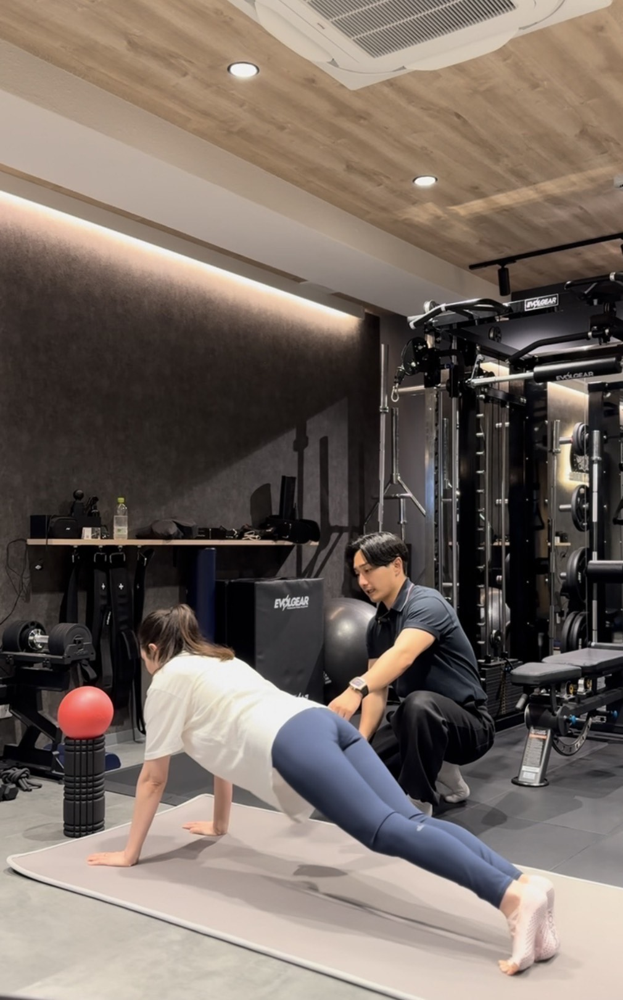
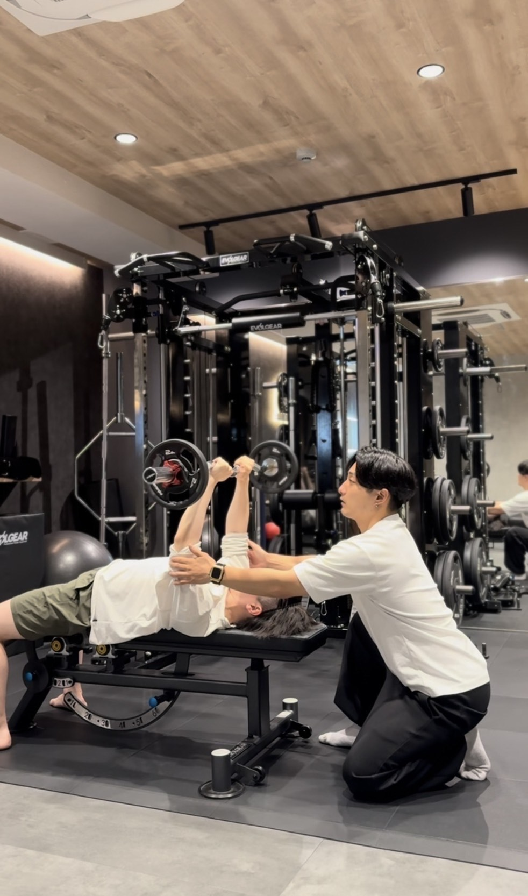
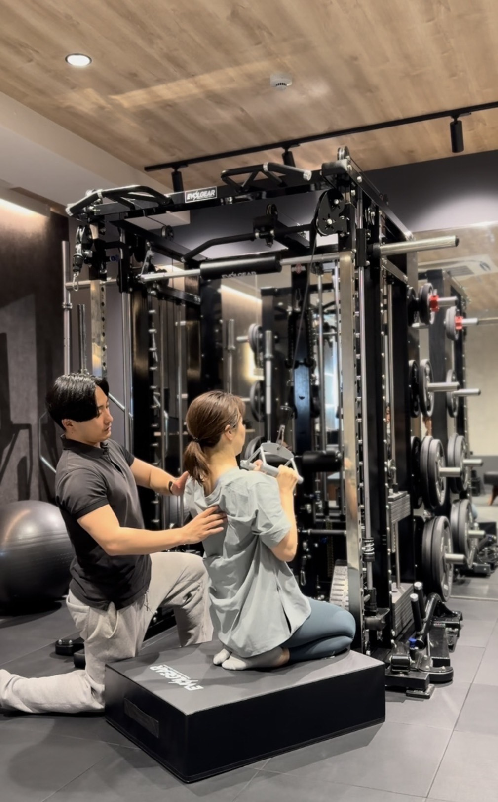
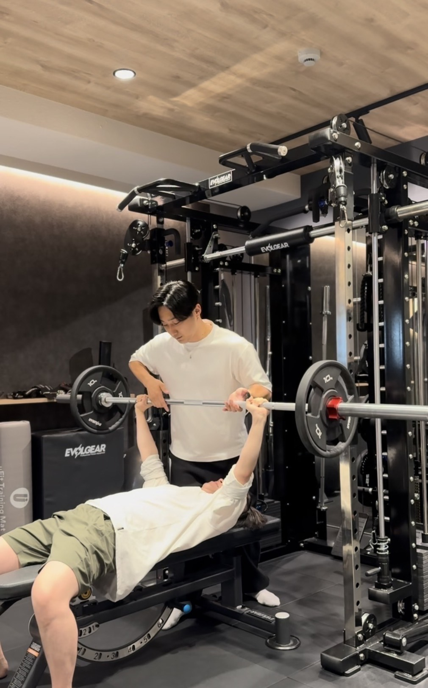
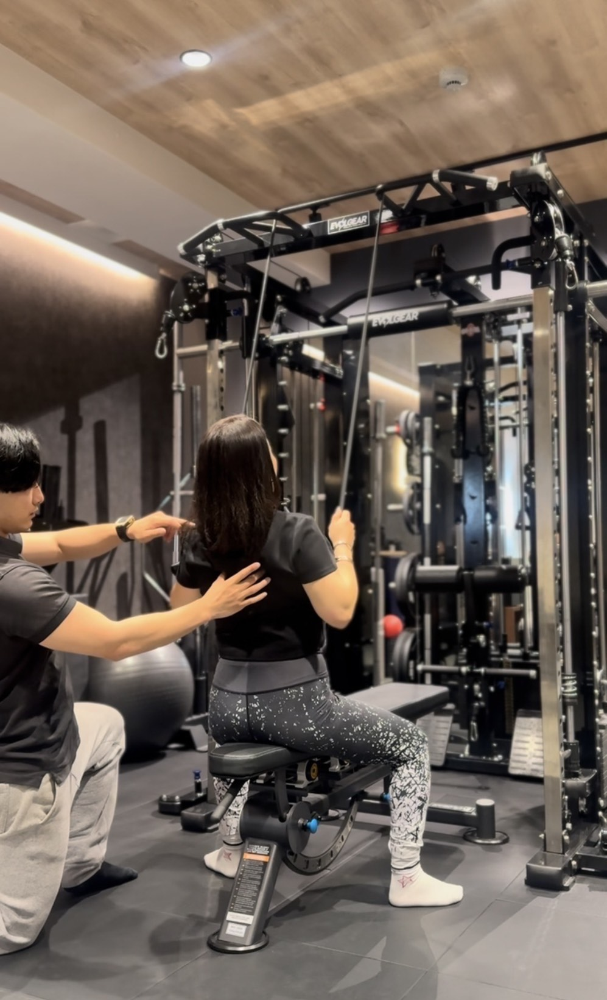
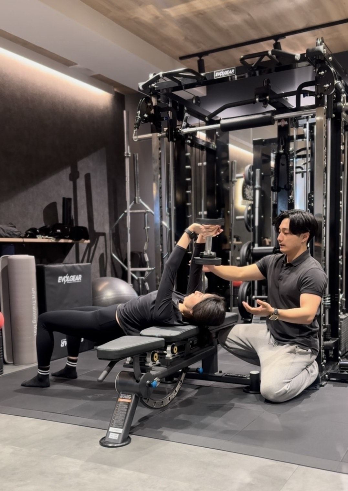
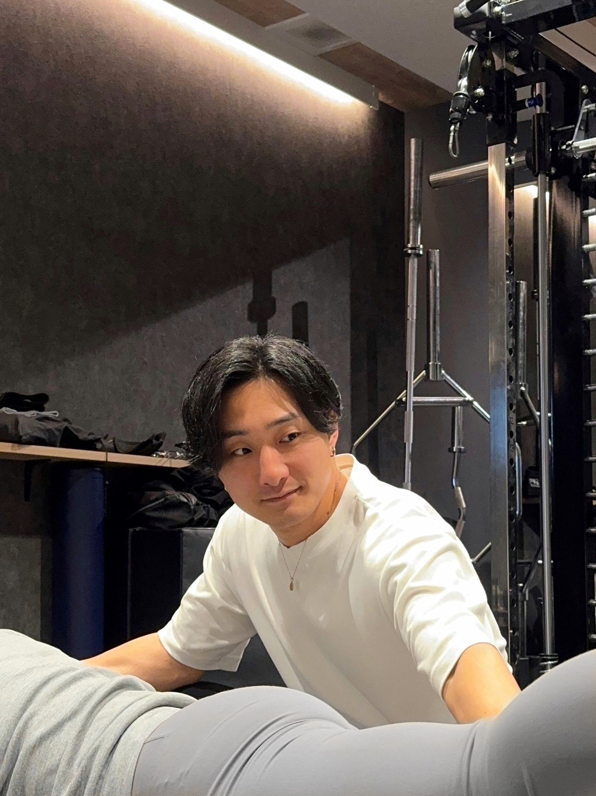

住所非公開×完全会員制
身体と感覚を整える、少数制パーソナルトレーニング
『全ては、カッコいい・美しいの為に』
LUDERAが大切にしていること
LUDERAは、ラテン語Ludere「自由に動く」とera「時代」をかけ合わせた名前です。
ただ身体を鍛えるだけでなく、姿勢、呼吸、重心、感覚。
日々の中で少しずつ乱れていくそれらを、静かに、丁寧に、整えていく場所です。
トレーニングは「頑張るもの」ではなく、自分の身体と向き合うための時間。
身体が整うと、
・立ち姿が変わり
・動きに無駄がなくなり
・所作や雰囲気に品が生まれます
それは結果として「カッコよさ」や「美しさ」として表れます。
LUDERAは、その"土台"をつくるための空間です。
どれだけ仕事ができても、どれだけ知識や経験があっても、身体が崩れれば、人生の質は大きく下がります。
LUDERAが考える健康とは、「何歳になっても、自分の足で立ち、歩き、選択できること」
派手な変化よりも、長く続く"確かな状態"。
一時的なダイエットや流行のメソッドではなく、日常に戻った時も崩れない身体を目指します。
LUDERAのトレーニングは、筋肉だけを見ることはありません。
• 呼吸の入り方
• 重心の位置
• 動きの癖
• 力の抜け方
そうした感覚の部分を大切にします。
同じメニューでも、同じ指導でも、身体の反応は人それぞれ。
だからこそ、マニュアルではなく、目の前の身体を見て、触れて、感じて整える。
これが、LUDERAのトレーニングです。
身体の変化は、画面越しや数値だけでは伝わりません。
その日の呼吸、わずかな姿勢の変化、力みや違和感。
それらは、同じ空間でしか感じ取れないものです。
LUDERAでは、一回一回のセッションを「身体とつながる時間」として大切にしています。
効率よりも、確かさを。スピードよりも、深さを。
身体は、動くことだけでつくられるものではありません。
何を食べ、どう休み、どんなリズムで日常を過ごすか。
LUDERAでは、無理な制限や管理ではなく、自分の身体の声を聞くことを大切にします。
整えるとは、足すことではなく、余分なものを手放すこと。
トレーニング・食事・休養は、すべて「より良く生きるための習慣」です。
完全会員制について
LUDERAは、完全会員制・少数制で運営しています。
理由は明確です。
• 一人ひとりと丁寧に向き合うため
• 空間と質を保つため
• 世界観を大切にするため
誰でも通える場所ではありません。だからこそ、深く関わることができると考えています。

1996年 名古屋生まれ
パーソナルトレーナー
LUDERAへのご相談・お問い合わせはDMにて承っております。